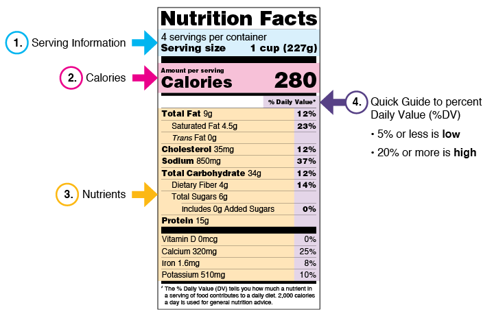
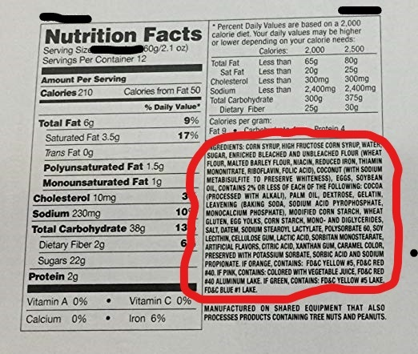

The human diet consists of macronutrients and these are proteins, fats, and carbohydrates. Protein can be found in poultry, milk, and eggs. Fats can be found in nuts, avocados, and butter. Carbs can be found in rice, pasta, and bread.
Before you start freaking out, no carbs are not unhealthy for you. Carbs, like fats and protein, are important and vital to living a healthy lifestyle. It’s when you eat an excess of carbs that you begin to gain weight.
All of these combined make up how many calories you consume. Proteins and carbs are 4 calories per gram, while fats are 9. Depending on your weight, sex, and height, you can determine how many calories you need to consume in one day to remain your current weight.
A good website to use to calculate how many calories, protein, carbs, and proteins you need in a day is TDEE calculator. It recommends how much you should consume daily and weekly if you wish to lose or gain weight.
How to Read A Food Label

Now that we understand what calories are and consist of, we can properly read a food label. The food label will tell you how many servings this food has and how many macronutrients it contains. If the serving size says 2, then you double all the information you see below it, including the calories.
You should generally stay away from saturated fats because they can lead to heart problems down the line. The better alternative is unsaturated fats.
Sodium is also something you should be wary of when reading a food label. Try to avoid food labels that contain more than 200 mg of sodium per serving or 10% DV.
Breakdown Of the Ingredient's List

The ingredients list is written in descending order, so the ingredient at the top is the greatest amount found in the food. It’s generally a bad sign to see sugar as one of the top ingredients because that means the food you’re consuming is mainly sugar.
Manufacturers will try to hide unhealthy ingredients in the list by using different names. For example, instead of saying sugar, they’ll say dextrose or sucrose. They’re both sugar, it’s just the name that’s different.
A general rule of thumb is if you can’t pronounce the ingredient, it’s probably not good for you. Be careful of what you put in your body because that could have a negative effect down the road.